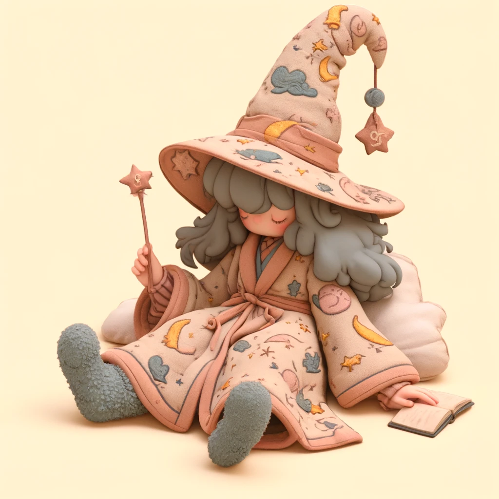

Welcome to my portfolio! With over 20 years of experience, I specialize in crafting beautiful and durable home exteriors. My mission is to combine functionality with aesthetics, ensuring each project becomes a unique piece of art.
Whether it's designing a dream house exterior or providing full home interior solutions, I bring passion and expertise to every detail.
